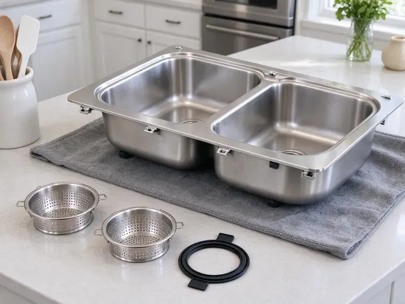

Grease Trap Installation in Glenview, IL
From under-sink hydromechanical units to in-ground gravity interceptors, our Glenview, IL crews handle the full grease trap install.
- Upfront Pricing
- Prompt, Dependable Service
- Free Estimates Available
- Experienced Local Plumbers

Professional Grease Trap Services in Glenview, IL.
Our team is ready to provide a fast and accurate quote for your installation project.
Your Go-To for Grease Trap Installation in Glenview, IL
HVM Plumbing installs hydromechanical grease traps and large gravity interceptors for restaurants, schools, food trucks with commissary kitchens and other food service sites. We calculate flow rates, select the right unit and connect every fixture that discharges fats, oils and grease.
Our expertise includes:
- Commercial kitchen grease trap sizing and installation.
- All grease trap sizes and types
- Code-compliant installations

Additional Kitchen Plumbing Services in Glenview, IL
Our kitchen plumbing services in Glenview, IL cover sinks, disposals, dishwashers, and grease traps so your kitchen keeps running without backups or leaks.


Customers
Why Choose HVM Plumbing for Grease Trap Installation in Glenview, IL?
An undersized or poorly vented grease trap fills fast, smells bad and leads to sewer backups and city fines. We size every install based on fixture counts, flow rates and the food you serve.
- Experienced Plumbers, Our technicians are well trained in the specific methods and requirements for installing various types and sizes of grease traps.
- System Efficiency, Proper sizing and installation mean your grease trap will effectively filter waste, extending the life of your plumbing system.
- Minimal Downtime, We schedule work after hours or between shifts to keep your kitchen running.
Citywide Coverage
We install grease traps for food service businesses in strip centers, standalone restaurants and mixed-use buildings throughout Glenview. Our crews handle both indoor and outdoor installations, including tight retail suites.
Experienced Team
Our team has worked with restaurant owners, architects and city pretreatment staff on many kitchen projects. They know how to plan an install that is simple to pump, inspect and maintain.
Safety-First Approach
When installing a grease trap, our plumbers prioritize a safe work environment and strict adherence to plumbing codes in Glenview. You can trust HVM Plumbing to complete the job responsibly and correctly the first time.
Trusted Certified Glenview Plumbing Services Professionals
At HVM Plumbing, we take pride in providing certified plumbing services throughout Glenview, IL. Backed by leading industry credentials, our experienced plumbers combine technical skill with genuine customer care. Whether it is repair, installation, or maintenance, we follow strict safety and quality standards to deliver long-lasting results you can trust.
Call Us Now PHCC Plumbing Contractor Recognition
PHCC Plumbing Contractor Recognition Better Business Bureau (BBB) Accreditation
Better Business Bureau (BBB) Accreditation Angi Certified Pro
Angi Certified Pro ISO 9001 Quality Management Certification
ISO 9001 Quality Management CertificationDependable Grease Trap Installation Services in Glenview, IL
Grease Trap Installation Cost in Glenview, IL
Small under-sink hydromechanical traps generally cost much less to install than large outdoor interceptors. Indoor units are typically a few thousand dollars installed, while in-ground interceptors can run well into five figures with excavation and concrete work. Pricing depends on unit size, location, soil conditions and whether we need to cut and patch floors. We give you a written estimate that includes permits and inspection. That way there are no surprises during construction.

Grease Trap Installation for Schools and Institutions in Glenview
School cafeterias, hospitals, senior living facilities and churches with kitchens often need commercial interceptors. These sites usually have large dish machines and steam kettles that push high flow. We size interceptors to handle peak lunch or dinner loads without bypassing grease. Our crews schedule work around school breaks or off hours. We also provide documentation for facility managers and code officials.
Automatic Grease Removal Units in Glenview
Automatic grease removal devices skim grease from the water and collect it in a container your staff empties. Brands like Thermaco Big Dipper are popular in kitchens with limited space and frequent cleaning needs. We install these units with the correct power supply and drain connections. They can reduce the need for frequent pump-outs in smaller kitchens. We explain daily maintenance so your staff keeps the unit running smoothly.
Grease Trap Sizing and Placement in Glenview, IL
Correct sizing and strategic placement are critical for a grease trap's effectiveness. Installing a unit that is too small will lead to frequent clogs and overflow, while an oversized one can be an unnecessary expense. Our plumbers meticulously calculate the required capacity based on your kitchen's water flow, fixture count, and operating hours, delivering optimal performance for your Glenview, IL business.
Hydromechanical Grease Trap Installation in Glenview
Hydromechanical grease traps sit under or near sinks and use baffles and flow control to separate grease from water. They are common in small cafes, coffee shops and quick-service restaurants with limited space. We install units from Zurn, Watts, Schier and Endura sized by gallons per minute. Each install includes a flow control fitting and proper venting to keep the trap working as designed. These units need frequent cleaning, so we place them where staff can reach the lid without trouble.
Emergency Grease Trap Services in Glenview, IL
While installation is planned, sometimes an emergency situation like a burst pipe or severe blockage may necessitate immediate grease trap attention. If your current system fails critically and requires urgent replacement to resume operations, HVM Plumbing offers emergency services in Glenview, IL. We prioritize rapid response to minimize downtime for your business and get your kitchen back on track.
Commercial Grease Trap Installation in Glenview
For restaurants, cafeterias, and any food service business in Glenview, a well-functioning grease trap is non-negotiable. We specialize in installing commercial-grade grease traps designed to handle high volumes of FOG, making sure your kitchen operates smoothly and compliantly. Our installations are matched to the specific needs and capacity requirements of your establishment, preventing costly backups and environmental issues.

Residential Grease Interceptor Setup in Glenview, IL
While less common, some large residential kitchens or homes with extensive outdoor cooking setups may benefit from a small grease interceptor. These are typically installed under the sink and help prevent fats, oils, and grease from clogging household drains. HVM Plumbing can assess your home's needs and provide a suitable residential grease trap installation solution that protects your plumbing system from FOG accumulation.
Grease Trap Installation Near Me in Glenview, IL
Our crews are based nearby and can visit your site quickly for a sizing review. We bring the equipment needed for indoor or outdoor installs. You get one point of contact from planning to final inspection.
When your business requires professional grease trap installation, you need a reliable local partner. HVM Plumbing is committed to serving the Glenview community with reliable, code-compliant plumbing solutions. Contact us for a hassle-free installation experience.
HVM Plumbing at a Glance
- Licensed and insured plumbers serving Glenview, IL
- Same-day appointments and 24/7 emergency response
- Clear written estimates, no hidden fees
- 4.8-star rated by 528+ Illinois customers
Glenview Map
Glenview Information
- Population
- 46,904
- Area codes
- 847/224/773
- Service area
- Glenview and communities within 40 miles
- Nearby
- Des Plaines, Skokie, Mount Prospect, Evanston
For commercial kitchens in Glenview, IL, proper grease trap installation is crucial for keeping FOG breakdown and odor issues under control. A long heating season keeps boilers and water heaters running hard, and humid summers can cause sweating pipes and damp basements.
Expert Services
Trust our professionals for reliable HVM Plumbing solutions in Glenview, IL.
Our Specialized Plumbing Services in Glenview, IL
At HVM Plumbing, we provide a complete range of plumbing services across Glenview, IL. From leak detection to full system installations, our team ensures fast, precise, and affordable service for both residential and commercial properties. Explore our core services below:


How Our Grease Trap Installation Process Works in Glenview, IL
HVM Plumbing follows a clear, step-by-step process to ensure every grease trap installation in Glenview, IL is done right and to code.
Request a Quote
Call us at (773) 903-7643 to discuss your grease trap installation needs. We will gather information about your commercial kitchen or property and schedule an on-site assessment.
Site Assessment
Our expert plumbers will visit your Glenview location to evaluate the space, determine the optimal grease trap size, and identify the best placement. We consider factors like kitchen layout, water usage, and local code requirements.
Permit Acquisition
For commercial grease trap installations in Glenview, permits are often required. We help you with the necessary paperwork and ensure all local permits are secured before commencing work.
Frequently Asked Questions About Grease Trap Installation in Glenview
Small indoor hydromechanical traps usually cost $1,500 to $5,000 installed. Large outdoor gravity interceptors often run $8,000 to $30,000 or more with excavation, concrete and site restoration. We provide a written estimate after a site visit.
Yes, in most cases, installing a new grease trap or replacing an existing one in Glenview requires specific permits from the local plumbing authority. HVM Plumbing will guide you through the permitting process, ensuring all necessary documentation is submitted and approvals are obtained before beginning work.
Indoor traps should be close to the fixtures they serve and easy to open for cleaning. Outdoor interceptors are typically placed where a pump truck can reach them without blocking customer traffic.
Signs you might need a new grease trap include frequent sewer backups, persistent foul odors coming from drains, slow drainage throughout your kitchen, or if your current unit is visibly corroded or leaking. If your existing trap is old and no longer meets current local codes in Glenview, an upgrade is also a good idea.
The cleaning frequency for a new grease trap depends on its size, the volume of FOG produced by your kitchen, and local regulations in Glenview. In most cases, grease traps require cleaning every 1 to 3 months. Regular cleaning is essential to maintain efficiency and prevent backups.
Determining the correct grease trap size involves calculating your kitchen's wastewater flow rate, fixture count, and peak operating hours. Our experienced plumbers will conduct a complete assessment of your Glenview business to recommend the appropriate size and type of grease trap that meets local codes and your operational needs.
HVM Plumbing stands behind our work with a solid warranty on all grease trap installations. The specific warranty period will be outlined in your service agreement and usually covers parts and labor for a designated timeframe. Manufacturer warranties also apply to the grease trap unit itself.
The main purpose of a grease trap is to intercept fats, oils, and greases (FOG) from commercial kitchen wastewater before they enter the public sewer system. This prevents pipe blockages, protects municipal infrastructure, and helps businesses comply with environmental regulations.
What People Are Saying About Our Plumbing Experts?

Sofia M.
Two new toilets installed in one visit, no mess left behind, and the tech even adjusted a faucet he noticed was dripping. Fair pricing and really friendly.
Toilet Installation · Glenview, IL
Daniel K.
A pipe burst at 11 pm and they actually answered. The plumber showed up within the hour, shut everything down, and had us back to normal the next morning. Could not ask for more.
Emergency Plumbing · Evanston, IL
Mark T.
When our office needed drain cleaning, HVM Plumbing provided quick, reliable service. The plumber arrived on time and made sure every drain flowed perfectly before leaving. Very satisfied.
Drain Cleaning · Evanston, IL
Patricia H.
We had a slab leak that two other companies could not find. HVM Plumbing located it in under an hour, explained our options, and the price matched the quote to the dollar.
Slab Leak Repair · Evanston, ILLaura S.
I scheduled a water heater replacement, and the team made the process smooth and affordable. The new unit works perfectly, and they cleaned up after completing the job.
Water Heater Replacement · Evanston, IL
Emily R.
I called HVM Plumbing for plumbing repair, and the technician was fast, polite, and thorough. They explained the problem clearly and fixed it the same day. I will definitely hire them again. Highly recommended!
Plumbing Repair · Des Plaines, IL